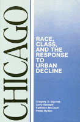

<body bgcolor="#FFFFFF" text="#000000" link="#0000FF" vlink="#CC0000" alink="#CC0000"><center><hr width="350" size="1" align="center" noshade>The social, economic, and political costs of the growth ideology for the Windy City<hr width="350" size="1" align="center" noshade><p><a href="https://cdcshoppingcart.uchicago.edu/Cart/ChicagoBook.aspx?ISBN=9780877224877&&PRESS=temple" target="_top">Buy this book!</a> | <a href="https://cdcshoppingcart.uchicago.edu/Cart/Cart.aspx?PRESS=temple" target="_top">View Cart</a> | <a href="https://cdcshoppingcart.uchicago.edu/Cart/Cart.aspx?PRESS=temple" target="_top">Check Out</a></p><p></p></center><!--none//--><h1>Chicago</h1>
<H2>Race, Class, and the Response to Urban Decline</H2>
<h3>Gregory D. Squires, Larry Bennett, Kathleen McCourt and Philip Nyden</h3>
<P>cloth 0-87722-487-0 $37.95, Sep 87, <FONT COLOR=#990033>Out of Print</FONT>
<br>paper 0-87722-617-2 $35.95, Feb 89, <FONT COLOR=#990033>Available</FONT>
<BR> 248 pp
6&nbsp;tables 4&nbsp;map(s) 2&nbsp;figures
</P><BLOCKQUOTE><I>"An important and useful study...that is accessible to undergraduates and yet provocative enough to interest the urban scholar."</I>
<br>&#151<b><I>American Journal of Sociology</I></b><I></I></BLOCKQUOTE>
<p>Despite local folklore, Chicago is not always a city that works. No longer the "Hog Butcher for the World," the Windy City has, in recent decades, pursued economic growth at all costs&#151to the detriment of many of its citizens. This book describes the social, economic, and political costs of the growth ideology and examines the populist response that promises an alternative Chicago.
<p>Tracing the city�s uneven economic development since World War II, the authors demonstrate how unchecked growth in favor of private enterprise has resulted in severe poverty, unemployment, crime, reduced tax revenues and property values, a decline in municipal services, and racial, ethnic, and class divisiveness. And yet proponents of Daley-style machine politics and the notion of the city as a growth machine still assert that the future of the city depends exclusively on its ability to grow. The victory of Harold Washington is the most visible symbol of the movement toward an alternative Chicago. Naming different priorities and using more participatory tactics, this challenge to the politics of growth promotes development that is responsive to social need, not just market signals.
<BR>&nbsp;<h2>Reviews</h2>
<p><I>"This incisive book is a much needed intellectual guide to the underlying social and economic forces that have shaped Chicago and continue to transform the city. I strongly recommend it to scholars and activists who seek to understand Chicago�s urban terrain."</I>
<br>&#151<b>Derek Shearer</b>
<p><I>"Offers a fresh look at the �City of Big Shoulders� by viewing its people and politics from an economic perspective. Of all the books I have read about my city, few have caused me to rethink prevailing social, economic, and political notions about the future of our city-and others-as much as this one."</I>
<br>&#151<b>Clarence E. Page</b>, columnist for the <I>Chicago Tribune</I>
<BR>&nbsp;<H2>About the Author(s)</H2>
<P><b>Gregory D. Squires</b> is Associate Professor of Sociology at the University of Wisconsin, Milwaukee.</P>
<P><b>Larry Bennett</b> is Associate Professor and Chair of the Political Science Department at DePaul University.</P>
<P><b>Kathleen McCourt</b> is Associate Professor and Chair of the Department of Sociology and Anthropology at Loyola University of Chicago.</P>
<P><b>Philip Nyden</b> is Associate Professor of Sociology at Loyola University of Chicago.</P>
<BR><H2>Subject Categories</H2>
<p><A HREF="/tempress/urban.html" TARGET="_top">Urban Studies</a>
<BR><A HREF="/tempress/african.html" TARGET="_top">African American Studies</a>
<BR><A HREF="/tempress/sociology.html" TARGET="_top">Sociology</a>
</p>
<BR><h2 class="inpageheading">In the series</H2>
<P><I><a href="http://www.temple.edu/tempress/cities.html" onMouseOver="window.status='Click for other books in this series!'; return true;" onMouseOut="window.status=''; return true;" target="_top">Comparative American Cities</a></i>, edited by Joe T. Darden.
</p><p>No longer active.</p>
<p align="center"><a href="https://cdcshoppingcart.uchicago.edu/Cart/ChicagoBook.aspx?ISBN=9780877224877&&PRESS=temple" target="_top">Buy this book!</a> | <a href="https://cdcshoppingcart.uchicago.edu/Cart/Cart.aspx?PRESS=temple" target="_top">View Cart</a> | <a href="https://cdcshoppingcart.uchicago.edu/Cart/Cart.aspx?PRESS=temple" target="_top">Check Out</a></p><p><font face="Arial" size="1"><a href="copyright.html" onMouseOver="window.status='Web Copyright Policy';return true;" onMouseOut="window.status=''" title="Web Copyright Policy">&copy;</a> 2015 <a href="http://www.temple.edu" target="new" onMouseOver="window.status='Link to Temple University home page';return true;" onMouseOut="window.status=''" title="Link to Temple University home page">Temple University</a>. All Rights Reserved. http://www.temple.edu/tempress/titles/527_reg.html</font></p>